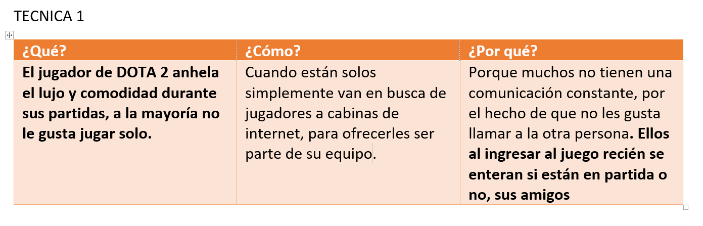

Design Thinking Workshop
In this second part of the Design Thinking methodology we will cover the second objective:
Develop empathy with users, by observing them. Therefore, it is a methodology based on observing the user.
Stages of Workshop Design Thinking Artiplayer



Discover
Sea has analyzed about the video game dota 2, and its impact on the players. Putting oneself in their place has led us to think that they want to have not only virtual objects as the company VALVE sells, but also to have real objects, whether they are of ornament or with special effects and designs. Many of the players have bought different items of dota 2, such as key rings and small ornaments made of rubber.
Consumers like comfort during the game and observe state-of-the-art machines in video games, and a good comfortable seat, a good mouse and a high-end keyboard.
Interpretation
The second phase consists in Interpreting the challenge or problem. It is true that we started with a specific challenge that can be more or less concrete. However, that challenge was something a priori, when we established it, we still did not know anything or almost nothing about the user for whom we were going to make our design. After the phase 1 in which we have opened our eyes and ears to understand our target audience, it is necessary to redefine this initial challenge or define as such the specific problem for which we are going to find solutions.
Devise
At this point, we can let all the creativity of the group flow. As I said at the beginning, it is very important not to give solutions or ideas to our challenge until this moment arrives, in which we have already perfectly defined the point of view of the user.
-Create furniture in the form of the character with lighting effects
-Create lamps that send a signal that the player is in game
-Make wooden characters
-Use lamps
-Use arduino
-Forests use WIFI as a signal
-We can also use a telephone line, like of course, movistar, etc.
To experience
When we have selected the ideas, we must make them tangible, that is, make a prototype of each one. The important thing is that this first prototype is as simple as possible and does not involve a high cost, nor imply too much time in its development.
Evolve
Our final project will be completely finished according to the critics of the users of a test product, we will make or test our product to see what things we can improve and evolve to achieve a 100% satisfaction of the user. We will answer questions such as:
This would be the final phase of this methodology. Once arrived at this point, the prototype of the selected idea must be delivered to the client or user to check if we really solve their problem.
Once the prototype has been analyzed and the customer feedback received, it is when we realize if we have really understood the user. Following this we must decide if the prototype is valid to start with its development or if it is necessary to modify it.
¿What if….?
¿I like but….?
¿we improve this ...?
¿It costs a lot to manufacture them, can we change something to make it more economical?
¿we use other material ...?
Seed material
Video that explains our seed material.
Therefore, it was defined not a problem but a taste for the game, something that we must take advantage of since these consumers present a good marketing, therefore it was made based on the theme of the game.